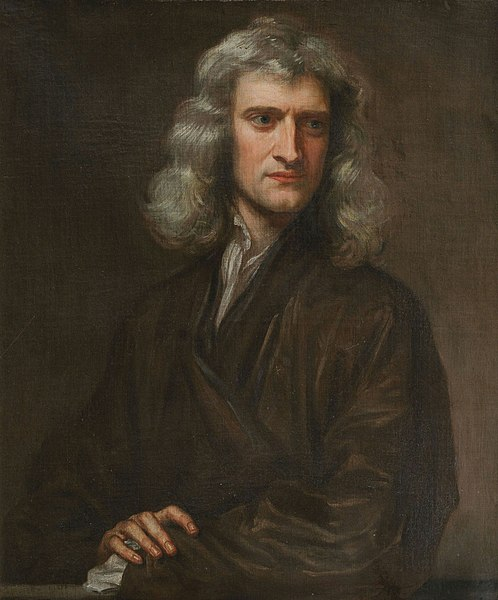

Sir Isaac Newton
A towering figure in the history of science, revolutionized our understanding of the physical world with his laws of motion, theory of universal gravitation, and pioneering work in calculus and optics.

Godfrey Knelle art for Isaac Newton
Major Event in Sir Isaac Newton Life's
- Formulation of Three Laws of Motion (circa 1666-1667): Newton formulated his laws of motion, including the law of inertia, acceleration, and action-reaction principle.
- Development of Law of Universal Gravitation (circa 1665-1666): Newton developed the law of universal gravitation, which he published in his work "Philosophiæ Naturalis Principia Mathematica" in 1687.
- Invention of Calculus (late 1660s to early 1670s): Newton independently developed calculus during this period, although its publication was delayed due to a dispute with Gottfried Wilhelm Leibniz over priority.
- Groundbreaking Experiments in Optics (1660s): Newton conducted experiments on optics, such as his famous prism experiments that demonstrated the composite nature of light.
- Proposal of Particle Theory of Light (late 17th century): Newton proposed the particle theory of light, challenging the prevailing view of light as waves.
- Contributions to Understanding of Cooling (early 18th century): Newton made contributions to the understanding of cooling, including the formulation of Newton's law of cooling.
- Investigation of Thin-Film Interference (circa 1665): Newton investigated thin-film interference, which led to his discovery of Newton's rings.
- Development of Mathematical Methods (late 17th century): Newton developed mathematical methods for solving problems in dynamics, celestial mechanics, and other fields.
- Publication of "Philosophiæ Naturalis Principia Mathematica" (1687): Newton's masterpiece, where he presented his laws of motion and law of universal gravitation.
- Election as President of the Royal Society (1703): Newton was elected President of the Royal Society, a position he held until his death, overseeing advancements in scientific research and collaboration.